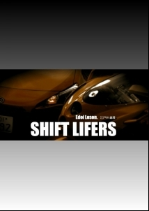

| SHIFT LIFERS Extra chapter （番外編） | |
| 江戸井 露尊 | |
| UNKNOWN (2015) | |
SHIFT LIFERS
Extra chapter （番外編）
江戸井 露尊
※この物語はフィクションです。一般公道では交通法規を守り、正しい装備で安全運転に努めましょう。登場する企業名、車種名などの固有名詞やスペックは、実在のものとは関係ありません。また、本書に書かれたライディングテクニックを誤解し、実際の走行に応用して起こる転倒などの事故や不利益などについて、作者は一切の責任を負いません。
【仲間】
深まる秋、平日の朝まだき。薄く墨で引いたような霧がかかる中、シノとレンは、二人連れ立っていつもの峠の駐車場に来ていた。シノが乗るのはヤマハ2ストローク250ccV型のエンジンを搭載したTZR。見た目はプレーンな白いカウルのついた代わり映えのしないマシンだが、これには盲目の名メカニックであるジェイの手がとことん入っていて、レーサー顔負けのスペックを誇る。一方のレンが乗るのはドゥカティの998cc・L型2気筒テスタストレッタエンジンを搭載した黒い999だ。これにもジェイの手が加えられ、マシン本来が持つ性能を極限まで引き出せるようになっている。二人は、サーキットでの耐久レース参戦が急遽決まった後、それまでの間、私に内緒で、俗にいう"コソ練"を行っていたらしい。
「時間なさすぎでしょいくらなんでも」いつもの白くて傷だらけの革ツナギに身を包んでいるシノはレンに言った。「あたしだって学校あってそれなりに忙しいのよ」シノはこう見えて普段の見た目はかわいげのある女子高生だった。
「だよね」こちらもいつもの黒ずくめの革ツナギを着ているレンは答えた。「ボクも課題のレポートの提出が丁度その日だよ」レンは都内の大学に通う経済学部の学生だ。共に私とは峠で偶然出会い、それがきっかけで今度一緒に知り合いの主催する耐久レースに出ることになったのだ。
「あたし、サーキットなんか走ったことないわよ」シノはふてくされて言った。シノは大抵の場合ふてくされている。
「ボクもない」レンは答えた。
「どうしたらいいと思う？」
「ホントならヒョウドウさんに教えてもらうべきなんだろうけど、あの人、普段の日は忙しそうだし」
「そうね。あのおじさん、ああ見えて一応仕事はしてるみたいだしね」
「耐久レースって二人一組で交代しながら走るのよね」
「だと思うよ」
「どっちが速いとか遅いとかで結果が変わったりするのかしら」
「たぶんそうじゃない？」
「あたしとあなた、どっちが速いのかしらね」
「さあ...」
二人はお互いのこれまでの走りの経緯を振り返った。
「最初はあたしが勝ったでしょ」
「うん」
「で、次はあなたが勝った」
「だね」
「決着がついてない」
「あっ」
「あっ、じゃないわよ。今度のレースまでに、そこのところハッキリさせておかない？」
「でもシノちゃんのバイクとボクのやつとじゃ流石に勝負にならないんじゃ...」
「ちょっと待って。いまの何よ」
「あっ、ごめん。悪気はないんだけど、でも流石に排気量が違いすぎるで...」
「違うわよ。そこじゃない。いま何てあたしのこと呼んだのよ」
「シノちゃん」
「なんでちゃん付けなのよ」
「だってボクの方が年上だし、このあいだ、シノちゃんは"お嬢さん"て呼ばれるの嫌だって言ってたじゃない」
「馴れ馴れしく聞こえるわ」
「だってシノちゃん」
「気持ち悪い」
「じゃあシーちゃんとか」
「殴るわよ」
「じゃあシノ」
シノは黙ってレンの足を蹴った。
「ひどいなシノちゃん。蹴るなんて」レンは言った。
シノは黙ってもう一度レンの足を蹴った。
「あっ」革のパンツの上からとはいえ、連続しての脛蹴りにレンは流石に痛がった。
「もういいわよ面倒くさい」シノは言った。「とにかく、もう一度ちゃん付けで呼んだらその時は覚悟しなさいよ」
「...わかった」
「それじゃあとりあえず走りましょう。先行、後追いで何度かやりあえば、限界まで追い込まなくてもお互いの走りについてはだいたい目星はつくようになるでしょ。勝ち負けはそれで十分はっきりするわ」
「そうだね」シノの提案にレンは同意した。
そうして二人は走り始めた。
＠＠＠
上りとなる最初はシノが先行、レンが後追いだ。
走り始めから、シノは容赦なくアクセルを開け、走り慣れた峠道のコーナーに何の躊躇もなく飛び込んでいった。これは本来あまり褒められた走り方ではない。季節はすでに秋も終わりに近づいていて気温も低く、少しの間とはいえ駐車場にバイクを止めてレンと話をしている間にもタイヤの温度はどんどん下がってしまっている。そんな状態でいきなり全開で走り始めれば、タイヤのグリップがまともに発揮できず最初のコーナーに入ったところで転倒するのがオチだ。
しかしシノは滑るタイヤなどものともせず、ところかまわずタイヤを滑らせながらコーナーに突っ込んでいく。その様子を後ろから追いかけるかたちで見ていたレンは、ヘルメットの中でさすがに呆れた表情を浮かべていた。
車重とパワーのあるレンのマシンで、いきなりシノと同じ走り出し方をしたら、転倒の危険度はさらに高まる。レンはマシンを暴れさせながら先行するシノを見ながら、それを無理に追いかけることはせず、コーナーを繋ぐ直線の間でメリハリのある加速と減速を行うことでしっかりとタイヤとブレーキを温めつつ、タイヤが適正なグリップを発揮するまでコーナーに攻めこむことを控えた。
そうしてコーナーをいくつかいなしながら、タイヤの手応えが確実なものとなったところで、レンはそれまで開けるのを抑えていたスロットルを一気に大きく煽った。
コーナーの立ち上がりでその持てるパワーの大半を開放したレンの999は、すでにコーナー5つ分ほど先行していたシノのマシンに対して猛然とその差を詰め始める。
2速全開で右の低速コーナーを立ち上がり、レブに当たる手前で3速に。さらに車速が伸びようとするところで峠道の短い直線は終わってしまう。レンはマシンの上でそれまで車体の右側にハングオフしていた身体を左に入れ替えるや否や、今度はフルブレーキだ。レンはブレーキレバーを右手の人差し指一本で引き絞る。180cmを越える長身を持つレンは、もともと自転車に乗っていたこともあって基礎的な筋力にも優れているため、普通であれば最低でも指2本は使うフルブレーキでも、指一本で済ませてしまう。
レンはブレーキレバーを握ると同時に左のヒザを外に突き出し、シートの上で腰を左にずらして、続く左に備える。車速が十分に落ちたところでギアペダルを踏み込み、1つシフトダウンして2速のコーナーへ。コーナーのアペックス（頂点）に向けて車体を倒しこみながら、リーンアングルの深まりに合わせてブレーキレバーを引き絞る力を緩めていく。
足の長いレンは、マシンがフルバンクに到達する手前からヒザが路面にタッチする。そして、リーンアングルの深まりに合わせてそのヒザを折りたたみ、バンク角が一番深まったところでレンはブレーキレバーを完全にリリースすると、今度はそこからアクセルを徐々に、しかし途中で止めることなく開けていく。
実に無駄のないレンの走りだったが、この走りでも、コーナーのブレーキングではシノとの差を詰めることはできない。これはシノとレンのマシンの車重差という物理的な制限に加えて、シノが常識はずれのむちゃくちゃな（しかし当人にとっては当たり前の）突っ込みをしているせいだ。
しかしレンは慌てることなく、コーナーひとつひとつの立ち上がり加速で無駄なくシノとの差を縮めていく。そしてコーナーとコーナーの繋ぎの直線が長い区間ではレンの独壇場となる。パワーが倍以上違う上に、設計年次の問題もあり、シノのマシンは総じてギア比が低く、加速した後の車速の伸びが鈍いのに比べ、基本的にサーキットユースを前提とし、ハイギアに設定された999のスピードが圧倒的に勝るのは当たり前だ。
二人が走りだしてしばらくすると、同じような黒塗りのモタード3台と、同じく黒塗りのレッカー車が対向車線を下っていくのとすれ違った。こんな時間にこの峠に他のバイクやクルマが走っているとは珍しい。しかし二人はそんなことは意に介することなく走り続けた。彼らはどれほど攻めようが、対向にはみ出すようなことはしないので、そもそもからして対向車を気にする必要もない。
そして、上りコースの中盤まででシノとレンの差は完全になくなった。
しかし終盤のキツい曲がりが連続する区間に入り、レンはブレーキの度にシノに突き放され、立ち上がりではアクセルを開けきることができるたけの道路の余裕がないため、前に出られるほど間隔を狭めることができない。
シノに追走するレンは、彼女の走りのリズムとパターンを後ろからじっくり見ていた。ブレーキに入るタイミング、マシンをリーンさせるポイント、どこでヒザを開き、閉じるか、アクセルを開け始めるポイントはどこなのか。しかしレンの行っているそれは意識的かつ分析的なものではなかった。純粋に視覚情報としてシノの走りを脳裏にインプットしながら、その特徴的な部分を直感で把握し、自分の走りの中に取り込める部分を抜き出すことがレンの走りの特異な部分だ。
途中いくつかのコーナーで、レンはシノのブレーキングのリズムでターンに入ることを試してみた。流石にシノのマシンと同じ車速で入るのは厳しかったが、ボトムスピードががっちり落ちる分、短い距離でフロントの向きを変えることができた。しかし、そこからシノとの距離を詰めようとスロットルを開けると、パワーがある分、低速域からのトラクションのコントロールが難しく、ともすればスロットルを開けた分だけリヤが外に逃げてしまい、せっかく突っ込みで無理して前との差を詰めても、立ち上がりでまた離されてしまう。シノお得意のハードブレーキだったが、それをレンが取り入れるには、車重とパワーの差を考え、勝負をかけるコーナーの大きさを予め見極めておく必要がありそうだった。
そして、峠の頂上に至る最後の直線で、レンはアクセルを開けきることはせず、シノの後ろについたまま折り返し点となる駐車場に入った。
「ねえ、あれであなた全力？」上りを終え、駐車場でバイクを停めたシノは、エンジンをかけたままヘルメットのシールドを上げて、横に来たレンに聞いた。
「うん、まあ全力だったよ」レンは答えた。「コーナーではかなりマージン削ったつもりだよ。直線では無理はしなかったけど」
「そう。それならいいわ。私もそう感じたし、あなたの力加減は理解できた」シノは言った。これはお互いに潰し合うたぐいの走りではない。これがレースとなったらそうは言っていられないが、公道での競り合いで、追走しあう相手のラインを潰したり、危険な追い越しをかけるような真似は、例えどれほどマシンに性能差があろうともしてはならない。相手の力量は、コーナーの進入と立ち上がりで変化する差を見て、感じることさえできれば十分に推し量ることができるのだ。
「じゃあ今度はあなたが先行ね」シノは言った。
「わかった。ボクが先に行くよ」レンは言った。
下りではレンが先行する。
シノは下り始めてしばらくは、その走りを後ろからしっかり見るために、レンとの間隔を少し広げたままでいた。
こうしてレンの走りを見るのはシノは初めてだ。ストレートでは伸びやかに、かつ躊躇なくリッターマシンのエンジンパワーを開放し、シノの250のマシンでは何をどうやってもついていけないくらいのスピードを呆気無く発揮する。
しかしシノは、レンのマシンのスピードではなく、その走りの滑らかさに舌を巻いていた。
必要にして最小限のブレーキ。高い車速を保ったままのコーナリング。フロントのトラクションで無駄なく旋回した後は、スムーズにアクセルを開け、リヤタイヤのトラクションを使ってさらにマシンを深く曲げながら同時に前に加速していく。いまのシノとシノのマシンでは、どうがんばっても真似のできない走りだ。
シノは、下り道の途中で連続する低中速のコーナーで、自分にできることをやってみて、レンとの差がどの程度詰まるか試してみた。
しばしレンにストレートで引き離された後、右の中速コーナーが迫る。前を走るレンのブレーキランプが点灯するが、シノはブレーキレバーにまだ触れない。レンはすでにマシンを倒しこみ始めているが、シノはまだだ。まだブレーキには触らない。そして、これ以上突っ込んだらコーナーを曲がりきれないギリギリのポイントで、シノは右手の指全部を使ってフロントブレーキを一気に握りこんだ。ブレーキングに指全部を使うのは、身長160cmに満たない小柄なシノの体格故のことだ。
あまりにも急激な減速で、フロントに荷重が乗り切る前に制動力が高まってしまうため、瞬間フロントタイヤがロックする。しかしそれを察知するかしないかの刹那に、シノは強く握ったブレーキレバーの右手の握力を断続的に強めたり弱めたりしながらロックを解除。フロントサスペンションはボトムストロークを使いきった奥で安定し、タイヤはその最大のグリップを発揮したまま路面を掴んでいく。普通、指全部を使ったブレーキングでは、細かな握力の調整はしにくいもの（だから代替において大雑把なブレーキングになりがち）だが、シノは細やかな指の動きで、大胆かつ繊細なブレーキのタッチを実現していた。
レンのマシンがその車重に見合っただけの速度に的確に減速する間、シノのマシンは、常識はずれの突っ込みによって、一気にその差を縮めていく。ブレーキに入る前には5車身ほどあった間隔が、クリッピングの手前までで2車身まで縮まる。レンが一次旋回を終え、二次旋回に入るまで〜ブレーキをリリースしてアクセルを開け始める手前での微妙なパートスロットルで車体の前後姿勢を整える〜時間にすればコンマ2秒もないその瞬間の「待ち」の間、シノは普通であれば（特にスロットルのレスポンスが遅れがちな2ストロークであればなおのこと）使うパートスロットルをほとんど無視して、ブレーキを握りこんだままマシンを倒しこみ、まるでフロントタイヤを力づくでクリッピングポイントに向けてねじ込んでいき、コーナーのアペックスに到達するやいなやスロットルを一気に全開にして加速体制に移る。
アクセルを入れるタイミングは、後からコーナーに入ったシノの方が先だった。確かにその瞬間は、シノのマシンのフロントタイヤは先行するレンのリヤタイヤに触れんばかりに近づいた。しかし、シノが内心、やった、追いついたと思うのと同時に、前を行くレンのマシンは必死にアクセルを開けるシノを徐々に後ろに追いやり、コーナーを立ち上がってマシンがほぼ直立するまでの間に、また2車身ほどの差を呆気無く付けられてしまった。
シノはヘルメットの中で軽く舌打ちをし、次のコーナーでもう一度仕掛けてみようとした。
その時だった。
前を走るレンのマシンのブレーキランプが突如点灯した。ここは続く左コーナーまでの間、しばし全開に持っていける数少ない直線だ。ここでブレーキをかけるということは、その先に尋常ならざる何かがあるという印だ。
シノの目前でフルブレーキをかけたレンは、瞬間左足をステップから外し、シノにこのあとの動作が分かるようにした。それを見て取ったシノは、本能的に自らのラインを右にずらした。その時レンはすでに身体を車体の左に大きくオフセットさせ、ハングオフの態勢でマシンのラインを左にずらしていた。
そうした別れた二人のラインの真ん中に、何か黒い固まりが見えた。走り抜けるシノの視界の端に、それは写った。
それは二匹のサバトラ柄のネコだった。一匹は親ネコなのか、横に寄り添うもう一匹に比べて身体がかなり大きい。しかしその大きなネコの方は、おそらくクルマにはねられたのだろう。すでに息はなく、口からは血を吐いて道路の上に横たわっており、その脇では子ネコが消え入りそうな声で鳴きながら、その亡きがらに身を寄せていた。このネコたちは、さっきシノとレンがここを上っていった時にはいなかったはずだ。とすれば...
右に避けたシノは、そのまま車線の余白を使い、直線的にフルブレーキをかけて、倒れているネコたちの先で止まることができた。しかし一方のレンは、ただでさえ続く左コーナーへのアプローチに向けて余裕のないところでラインを左に切ったため、このままでは側溝を飛び越えて山の斜面に真っ直ぐ突っ込んでしまうコースに乗ってしまった。
「あぶない！」シノはレンがラインを大きく外して山に突っ込もうとしているのを見て思わず声をあげた。しかしそのとき、レンは状況を冷静に把握していた。
道路の真ん中で倒れていたネコを避けるために、瞬間的にハングオフで左にマシンを倒しこんだレンは、ネコたちを確実に避けたことを確認するや、フロントブレーキを人差し指で一瞬だけかけるのに合わせてステアリングを左に切り込んだ。その動きを受けて、レンの999は、フロントから弾かれるように、車体を左から右に切り返した。
レンは大柄な体躯を活かして、自分の身体の下でマシンを躍らせると、左から右に車体の傾きが移ったところで左のヒザを、ステップを軸に大きく左側に突き立てて、さらに右に倒れ込もうとするマシンの動きを止めた。
逆リーンだ。
これは、連続するコーナーにおいて、次のコーナーへのアプローチに対してマシンの切り返しが間に合わない時に使うテクニックで、手前のコーナーは車体を倒しこんだ分のリーンアングルでまかない、次のコーナーに対して予めハングオフの姿勢を取っておくことで、切り返しの遅れを取り返すことができる。ただし、これはかなり変則的なフォームであり、一個目の曲がりがどうしても甘くなるため、あまり多用するようなものではない。
この特殊なテクニックを、レンは半ば本能的にこなし、この危機的な状況を脱することに利用したのだった。
レンは逆リーンからのターンインでギリギリ次の左コーナーへのアプローチを確保すると、そのコーナーを無事に曲がりきった先でマシンを減速させ、Uターンしてシノのところまで戻った。
「いやあ危なかったね。シノちゃんがボクの動きに気づいてくれてよかったよ。大丈夫だった？」レンはシノの元に戻ると、道路の端に停めたマシンの上で呆然としている彼女に対してまるで何でもなかったかのように言った。
「大丈夫なのはあなたの方よ」溜息をつきながらシノは言った。「よかった。あのまま斜面に突っ込んじゃうかと思ったわ」シノはヘルメットを取った。
「いや、コーナーを立ち上がったところで前に何かあるのが見えた時に、ああいう避け方しかないと思ったんだ。ボクがうまく避けられたのも、シノちゃんがボクの意図を読み取ってくれたからさ。おかげで助かったよ」そういうとレンもヘルメットを取った。シノはもう自分のことをちゃん付けで呼ばれることは気にならなくなったようだ。
二人はマシンを邪魔にならないところに移動させると、道路の上に倒れたままの親ネコとその横にいる子ネコの元へ駆け寄った。やはり親ネコの方はもう息がない。そのことを確認すると、シノは鳴いている子ネコを親ネコから引き離し、自分の腕の中にやさしく包んだ。レンは親ネコを抱き、その亡きがらを道路脇の草むらの中に穴を掘り、埋めた。
「この子どうしよう」ニャアニャアと鳴き続ける子ネコを抱いたままのシノは言った。
「このまま放っておくわけにもいかないよね」レンは言った。
「そうね」
「連れて帰る？」
「あたしん家に？」
「ボクんとこは無理なんだよ。動物ダメなアパートで」
「どうしよう。あたしんちもちょっと無理かも...」
＠＠＠
「で、オレんとこに持ってきたのかよ！」ジェイはいつものガレージの奥にある、お気に入りのソファの上にふんぞり返りながら言った。ジェイは私が以前レースに参戦していたころから付き合いのあるメカニックだ。とある事情があって彼は視力を失ったのだが、しかし盲目になってから後、彼はもともと持っていたメカニックとしての才能にさらに磨きをかけ、いまではその腕前は業界内でも知られた存在となっていた。
峠で子ネコを保護したシノとレンは、しばらく思案した後、ジェイのところにその子ネコを連れてきた。
「オレはネコなんか飼わねえぞ！動物なんかとんでもねえ」ジェイは本気で怒っているように見えたが、実際何を考えているかは、その分厚いサングラスの下で視力を失っている目からうかがい知ることはできなかった。
ジェイのガレージに放たれたネコは、少しの間怯えている様子だったが、シノが買ってきたネコ用のミルクをたらふく飲むと元気を取り戻し、あちこち様子を見て回っていた。
「いいじゃない。ここのガレージなら広いし、みんなも集まれるし」ぶんむくれるジェイなどおかまいなしでシノは言った。「どうせ他に誰もいないんでしょう？」
「おい、こいつら何とかしろよ」ジェイは私に泣きついてきた。「元をたどればこんな事になったのは全部おめえのせいだぞ」
「まあ事情が事情なんだし、預かってやればいいじゃないか」私はジェイに言った。
「ボクからもお願いしますよジェイさん。ネコのエサとかは、ボクとシノちゃんで定期的に持ってきますから」レンもジェイに懇願した。
「なんだよどいつもこいつも気楽に言いやがって。オレはネコなんか飼わねえぞ。ネコなんか...」そう言っているジェイのヒザの上に、子ネコがやってきてちょこんと座った。ジェイの白髪交じりのヒゲにじゃれつきながら、無邪気にニャアと鳴いた。
「ほら、その子もここがいいって」満面の笑みを浮かべてシノは言った。
「くっそ。マジかよ...」ジェイはボサボサのアタマの毛を掻きむしりながら、ソファの上でヒザにネコを載せたまま途方に暮れていた。
こうして私たちに新しい仲間が加わったのだった。
＜終＞
SHIFT LIFERS

～キミは自分が本当はどんな人間か知りたいか。だったらオートバイに乗るといい。～
峠で無心にバイクを走らせていた一人の若いライダーと、かつてライダーだった「私」が出会い、そこから「私」の止まっていた時間が、少しずつ動き出す...。
オートバイに乗るということはどういうことなのか、ライディングを追求した先には何があるのか。 モーターサイクルライディングの魅力とその真髄に迫る、「読むだけで速くなる！」バイク小説。
●Amazon Kindleストアにて好評発売中！
紙面換算160ページ 定価：550円（税込）
【本作に登場するバイク・クルマ】
ドゥカティ999、スバルBRZ、ヤマハTZR250R（3XV）、ホンダCBR600RR（PC37/PC40）、ヤマハYZF-R1（2KS）
【著者 ： 江戸井 露 尊 について】
Safety & Fastを信条に、2輪4輪問わず走りの研鑽を続ける、印刷・広告業界に籍を置くコピーライターであり、ウェブコンテンツプランナー&ディレクター。取材から企画、ライティング、時にデザインまでをこなす、要は何でも屋。バイク歴は20数余年。四輪のジムカーナ公式戦、サーキットアタックなどの参戦経験あり。現在の愛車はドゥカティ999とスバルBRZ。